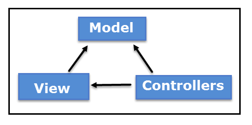

Intro to .NET MVC
Created by Tyler Blake / @TylerBlakeLOU
Agenda
- What is .NET?
- What is MVC?
What is .NET?
- A Framework designed by Microsoft
- What is a framework?
- It is an abstraction in which common code providing generic functionality can be selectively overridden
- An example of this functionality would be CRUD functionality
- Is NOT a programming language
What is MVC?
- MVC is an architectural pattern in software development
- It stands for Model, View, Controller
- Is NOT specific to Microsoft or .NET 
- This is a bad MVC Workflow diagram

Model
- This refers to your data models
- Example
View
- This would be the parts that you and the users see
Controller
- This is where your routing logic will go
- This is how you will control what views(pages) the user gets redirected to and/or sees
Service/Data Access Layer
- This is where your business logic will go
- This is where you would push or pull data into your database perhaps
- Note: You could provide another layer of abstraction after the service for data access to the database.. some say that is best practice.